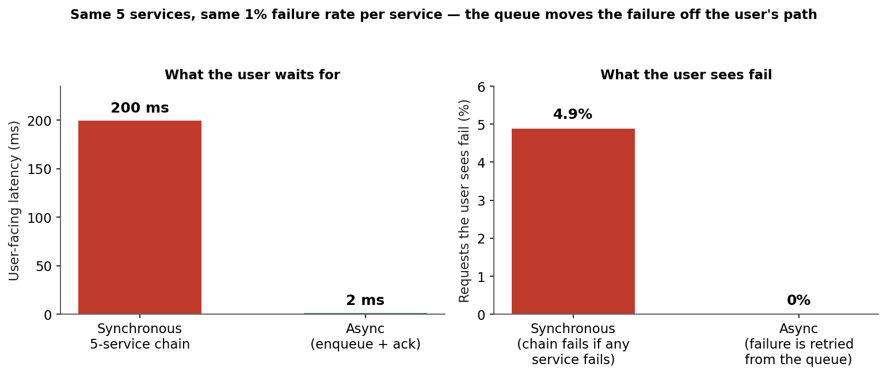
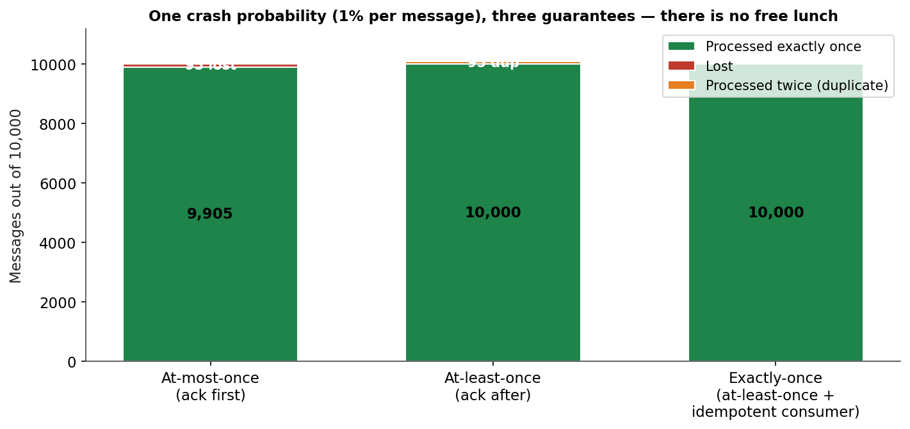
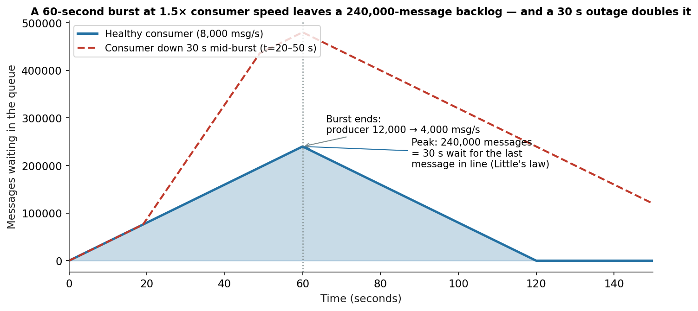
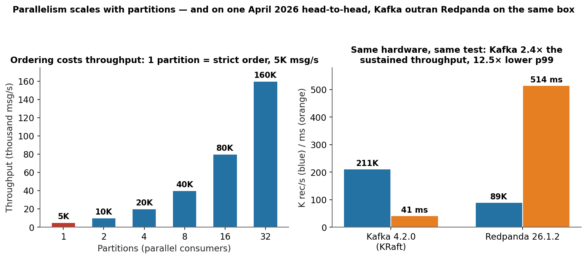

A checkout calls five services in a row — payment, inventory, fraud, email, analytics. Each one takes 40 ms and each one fails 1% of the time. The user waits 200 ms, and 4.9% of checkouts fail in front of them, because a chain fails if any link fails: 0.99⁵ = 95.1% success. Add a sixth service and it gets worse. This is the tax on synchronous calls, and every system that grows past a handful of services pays it — until it stops calling services directly and starts leaving messages for them instead.
A message queue is the buffer between "I need this done" and "it is done." The producer drops a message on the queue and moves on in 2 ms; the consumer picks it up when it is ready, retries it if it fails, and the user never sees the failure. That one indirection — decoupling in time — is what lets a system survive a downstream outage, absorb a traffic spike without falling over, and scale its producers and consumers independently. It is also what introduces the three questions that define every queue design: what delivery guarantee do you get, what ordering do you get, and what happens when the consumer cannot keep up.
This is Part 4 of System Design, Plainly: one concept per post, evergreen, beginner-friendly, with the concrete numbers and the failure modes. Today: message queues — what they decouple, the three delivery guarantees and what each one costs, why ordering and parallelism are the same tradeoff, and the backpressure math that decides whether a spike is a blip or an outage.
The ELI5 version
Imagine a restaurant. The waiter takes your order and walks it to the kitchen — that is a synchronous call. If the kitchen is backed up, the waiter stands there waiting, the dining room fills with waiters standing around, and new customers cannot even get seated. Now put a ticket rail between them. The waiter clips the order to the rail and is back at your table in seconds. The kitchen pulls tickets in order, one cook per ticket, and if a dish burns, the ticket goes back on the rail to be remade — you never see it happen.
The ticket rail is the queue. The waiter is the producer, the kitchen is the consumer, and the rail holds the work while the two sides run at different speeds. Three things about the rail matter, and they are the whole subject of this post.
First, the rail absorbs bursts. Lunch rush hits and fifty orders arrive in a minute; the kitchen still cooks one at a time. The rail grows, nobody is turned away, and the wait grows in proportion to the queue — that is Little's law, and it is the only equation in this post you need to memorize: average wait = queue length ÷ processing rate.
Second, the rail decides what "done" means. A ticket can be thrown away after one attempt (fast, but a dropped ticket means a lost order), retried until it succeeds (nothing is lost, but a burnt dish can be served twice), or retried with a check that the dish was not already served (nothing lost, nothing doubled — but now the kitchen has to remember what it already cooked).
Third, the rail decides the order. One cook, one rail, strict first-in-first-out. Ten cooks, ten rails, ten times the throughput — but two tickets for the same table can now finish in either order, and "charge the card, then send the receipt" can arrive as "receipt, then charge" unless both tickets go down the same rail.
How it works: producer, broker, consumer — and the three guarantees
The moving parts
A producer writes messages to a topic (Kafka's name; RabbitMQ calls it a queue, NATS a stream, SQS a queue). The broker stores them durably — on disk, replicated across nodes — and a consumer reads them. In the log model (Kafka, Redpanda, NATS JetStream, Pulsar) the broker keeps messages after delivery, so a new consumer can replay history from an offset; retention is measured in days or size. In the classic queue model (RabbitMQ, SQS) a message is deleted once acknowledged; retention is measured in minutes to 14 days, and there is no replay.
Consumers scale in two dimensions. A consumer group splits a topic's partitions among its members — each partition is consumed by exactly one member at a time, so adding consumers adds throughput until you run out of partitions. And partitions split a topic by key: messages with the same key always land on the same partition, which is how you get per-key ordering without giving up parallelism. The arithmetic from our simulation: one partition, strict global order, 5,000 messages a second; 32 partitions, 160,000 a second — 32× the throughput, but ordering now holds only within a partition. The key you partition by is a sharding decision in disguise (Part 3), and it has the same whale problem: a key carrying 30% of traffic leaves the busiest partition at 32.2% even at 32 partitions, against an ideal 3.1%.
The three delivery guarantees, priced
Every queue offers one of three guarantees, and the price is paid in lost messages, duplicate messages, or bookkeeping:
At-most-once — acknowledge before processing. Fast, no duplicates, but a crash between the ack and the processing loses the message. Our simulation on 10,000 messages with a 1% crash probability per message: 95 lost (0.95%), zero duplicates. Use it for telemetry and metrics, where losing 1% of samples is invisible.
At-least-once — acknowledge after processing. Nothing is lost, but a crash between processing and the ack redelivers the message, so the consumer sees it twice. Same simulation: 0 lost, 95 duplicates (0.95%). This is the default for almost everything, and it means your consumer must tolerate duplicates — which is why "idempotent consumer" is the most repeated advice in queue design: processing the same message twice must have the same effect as processing it once. A payment handler that checks a dedup table before charging is idempotent; one that charges on every delivery is a double-charge machine.
Exactly-once — at-least-once delivery plus an idempotent consumer. Same simulation: 0 lost, 0 duplicates. Kafka's version is stronger still: idempotent producers (sequence numbers per producer, broker dedups retries) plus transactions (KIP-98) let a consumer read, process, and write atomically, so the "exactly once" holds end-to-end — but only inside the Kafka ecosystem, and only if the consumer is written to the contract. The honest framing: exactly-once is not a switch you flip on the broker. It is a property of the producer, the broker, and the consumer together, and any one of them can break it.


Backpressure: the queue is a shock absorber with a capacity
When producers outrun consumers, the queue grows — and the wait grows with it. Our simulation: producers burst at 12,000 messages a second for 60 seconds against a consumer holding 8,000. The backlog peaks at 240,000 messages, and the last message in line waits 30 seconds (240,000 ÷ 8,000). The burst ends, the producer drops to 4,000 a second, and the backlog drains in another 60 seconds. Add a 30-second consumer outage mid-burst and the peak doubles to 480,000 — the outage costs twice, once in the messages that pile up while the consumer is down and once in the drain time after it returns.
Three responses exist, and every production queue uses all three: slow the producer (backpressure — the broker rejects or throttles writes, or the client blocks), grow the consumer (add consumers up to the partition count; beyond that, add partitions, which is a resharding decision), and shed load (drop low-priority messages, or route them to a dead-letter queue). What you must never do is let the queue grow without a bound: an unbounded queue is a memory leak with a dashboard, and the disk-full broker is the most boring and most common queue outage there is.
Retries, dead letters, and the poison message
A message that fails processing goes back on the queue — but a message that fails every time is a poison message, and naive retry turns it into an infinite loop that starves every other message behind it. The standard fix is a retry policy with backoff (retry after 1 s, then 10 s, then 60 s) and a dead-letter queue (DLQ): after N attempts the message is moved aside for a human to inspect, and the consumer moves on. The DLQ is not a graveyard — it is a work queue for the on-call engineer, and a DLQ nobody reads is a silent data-loss channel. The same discipline applies to ordering: a single slow message at the head of a partition blocks every message behind it (head-of-line blocking), which is why per-message timeouts and DLQs exist — the queue must be able to give up on one message without giving up on the partition.

The state of the art: four systems, one split
The queue world splits into two camps — the log and the broker — and in 2026 the log is winning the workloads that matter.
1. Apache Kafka — the log, and the default. A distributed append-only log with topics, partitions, consumer groups, and retention measured in days to forever. Kafka 4.0 (March 18, 2025) removed ZooKeeper entirely — KRaft, its built-in Raft consensus, is now the only mode, so a 3-broker cluster is self-sufficient and controller failover runs under 5 seconds. The 4.0 release also made the rewritten consumer rebalance protocol generally available (KIP-848), and share groups — queue-style cooperative consumption that is not limited by partition count — went production-ready in 4.2 (February 2026); the current release, 4.4.0, shipped October 22, 2026. Scale is not theoretical: LinkedIn runs 7 trillion messages a day on Kafka, and more than 80% of the Fortune 100 use it. The cost is operational weight: JVM heap (typically 3–8 GB per broker), partition management, and rebalancing — which is exactly the gap the next two systems attack.
2. Redpanda — the log, rewritten in C++. Kafka-compatible on the wire, built on Seastar with a thread-per-core engine, no JVM, no ZooKeeper ever, single binary. Its pitch is 10× lower tail latency with 3× fewer nodes, plus tiered storage to S3/GCS that predates Kafka's equivalent. The honest benchmark picture is messier than either vendor's marketing: an April 2026 head-to-head on identical 4 vCPU / 8 GB hardware (Kafka 4.2.0 KRaft vs Redpanda 26.1.2, Kafka's own perf-test tools, 5M messages sustained) measured Kafka at 211,283 records/s sustained against Redpanda's 89,455 — 2.4× higher — with p99 latency 41 ms against 514 ms. Redpanda's own benchmarks report the opposite ranking on p99 (2–5 ms vs Kafka's 10–15 ms). Both cannot be right in general, which is the point: the ranking flips with message size, partition count, ack mode, and hardware. The same April test shows the shape — Kafka wins at 6 partitions and acks=all (479K vs 291K rec/s; 326K vs 39K rec/s), Redpanda wins on single-partition acks=1. Load-test your own workload; never buy a broker on a benchmark you did not run.
3. NATS JetStream — the log, made light. NATS has been the lightweight pub/sub system since 2011; JetStream (2021) layers persistence, delivery guarantees, and replay on top of core NATS. A NATS server is a single Go binary with a ~22 MB baseline footprint, sub-millisecond p99 pub/sub latency, and built-in request-reply — which makes it the default for service-to-service communication inside Kubernetes, where Kafka's operational weight is unjustifiable for under a million messages a day. On a 3-node, 8 vCPU test it sustained ~820,000 messages a second against Kafka's 1,200,000 batched. The tradeoff: retention is bounded by disk and replication, long-term replay across months is Kafka's job, and the ecosystem (Connect, Schema Registry, Streams) is thinner.
4. The managed queue — SQS, and the broker camp. Amazon SQS is the "no operations" answer: standard queues are nearly unlimited in throughput with best-effort ordering and at-least-once delivery; FIFO queues give exactly-once processing and per-group ordering at 300 transactions a second per action (up to 70,000 in high-throughput mode). Retention is 60 seconds to 14 days, there is no replay, and that is the point — SQS is a queue, not a log. RabbitMQ (AMQP, flexible routing, competing consumers, one CPU core per queue replica) and Apache Pulsar (BookKeeper storage, tiered storage, multi-tenancy) fill the same broker camp. Choose the log when you need replay, audit, and stream processing; choose the queue when you need task distribution and zero operations.

Why it breaks
Every queue outage is one of these seven:
- The poison message. One malformed message fails every attempt, retries with no backoff, and pins a consumer — or, in a single-partition topic, blocks the whole partition behind it. Fix: exponential backoff, a max-attempts cap, and a dead-letter queue that a human actually reads.
- The retry storm. A downstream service goes down, every consumer retries at once, and the retry traffic is a second outage on top of the first — aimed at the service that is already down. Fix: backoff with jitter, circuit breakers on the consumer, and a global retry budget.
- The unbounded queue. Producers outrun consumers for hours, the backlog passes the disk, and the broker dies — taking the buffered work with it. Fix: retention limits, disk alarms at 70%, backpressure that throttles producers before the broker is full, and an autoscaling rule tied to consumer lag, not CPU.
- The consumer-lag blindness. Nobody watches lag, so a slow consumer is discovered by users reporting stale data — 240,000 messages deep, 30 seconds stale, and the drain takes another minute after the burst ends. Fix: alert on lag (messages and age of oldest message), and know your drain time before the spike, not during it.
- The exactly-once illusion. The broker is configured for exactly-once, the consumer charges the card on every delivery, and a crash between processing and ack double-charges 1% of orders. Fix: idempotency keys and dedup tables in the consumer — the guarantee lives in your code, not in the broker's config.
- The ordering accident. Two messages for the same order land on different partitions (bad key choice — no key at all, or a key that does not match the entity), and "cancel" is processed before "charge". Fix: partition by the entity the order applies to, and test the ordering with a chaos run that shuffles delivery.
- The rebalance storm. A consumer joins or leaves, the group rebalances, and during the rebalance nobody consumes — or worse, two consumers own the same partition briefly and both process the same messages. Kafka's KIP-848 rewrite and share groups (4.2) exist to shrink this window; the operational fix is the same as ever: stable consumer membership, generous session timeouts, and a rebalance budget in your latency SLO.
The interview angle
"Design a notification system" or "design Uber's ride-matching" is a message-queue question in disguise, and the expected answer is a tour of exactly this post: producers and consumers decoupled by a durable log; topics partitioned by the entity that needs ordering (user ID for notifications, ride ID for matching); consumer groups for parallel processing; at-least-once delivery with idempotent consumers as the default, exactly-once only where money moves; a dead-letter queue for poison messages; and backpressure plus lag alerting so a spike is a dashboard event, not an outage.
The follow-ups that separate good answers from great ones: how do you guarantee order for one user's notifications? (same key → same partition, one consumer per partition at a time); what happens when a consumer crashes mid-message? (offset not committed, message redelivered, idempotent consumer absorbs the duplicate); how do you handle a message that always fails? (backoff, then DLQ, then a human); when is a queue the wrong answer? (when the caller needs an immediate answer — that is an RPC — or when the data fits in a database and the "queue" is a table with a status column, which is a queue with transactions and no new infrastructure); and log or queue? (replay and audit → log; task distribution and zero ops → managed queue).
In the real world, the decision is usually not which guarantee to implement — it is which system to buy. Kafka if you need replay, ecosystem, and proven scale; Redpanda if you want Kafka's protocol with less operational weight; NATS JetStream if you are inside Kubernetes and under a million messages a day; SQS if you want zero operations and can live without replay. The guarantee still matters, because the broker does not make your consumer idempotent — and the consumer is where exactly-once actually lives.
Takeaways
- A queue moves failure off the user's path: a 5-service chain fails 4.9% of requests and costs 200 ms; the same work through a queue answers in 2 ms and retries failures out of sight.
- There are three guarantees and no free lunch: at-most-once loses ~1% at a 1% crash rate, at-least-once duplicates ~1%, exactly-once needs an idempotent consumer — the guarantee lives in your code, not the broker's config.
- Backpressure is Little's law: a 60-second burst at 1.5× consumer speed leaves a 240,000-message backlog and a 30-second wait; a 30-second consumer outage doubles it. Alert on lag and know your drain time before the spike.
- Ordering and parallelism are the same tradeoff: 1 partition gives strict order at 5,000 msg/s, 32 partitions give 160,000 msg/s with order only within a partition — and a 30% hot key floors the busiest partition at 32.2% no matter how many partitions you add.
- Kafka 4.0 killed ZooKeeper (March 2025, KRaft only) and 4.2 made share groups production-ready; the benchmark ranking between Kafka and Redpanda flips with the workload, so load-test your own before choosing.
- The poison message is the most common queue outage: backoff, a max-attempts cap, and a dead-letter queue a human actually reads — a DLQ nobody reads is silent data loss.
- Try it yourself. The companion notebook replays all four simulations: the 4.9% sync-chain failure vs 0% async, the 95-lost / 95-duplicate delivery semantics, the 240,000-message backlog and 120-second drain, and the 5,000 → 160,000 msg/s ordering curve with the 32.2% hot-partition floor.
This is Part 4 of System Design, Plainly. Part 5 — CAP and PACELC — is next. Follow me on dev.to (@danielsamfdo) so you don't miss it.
Sources: Apache Kafka 4.0 release notes (March 18, 2025 — ZooKeeper removed, KRaft only, KIP-848 GA); Kafka 4.2 / 4.4.0 release notes (share groups GA, Oct 22, 2026); Apache Software Foundation ("more than 80% of Fortune 100 use Kafka"; LinkedIn 7 trillion messages/day — company-reported); ComputingForGeeks, "Kafka vs Redpanda: Real Benchmarks on Identical Hardware" (April 2026, Kafka 4.2.0 vs Redpanda 26.1.2, 4 vCPU / 8 GB, kafka-producer-perf-test — sustained 211,283 vs 89,455 rec/s, p99 41 vs 514 ms, avg 2.53 vs 315.42 ms; single-partition acks=1 and 6-partition figures from the same test); Redpanda vendor benchmarks (p99 2–5 ms vs Kafka 10–15 ms — vendor-reported, conflicts with the April 2026 head-to-head, flagged in post); NATS JetStream docs and 2026 comparisons (single Go binary, ~22 MB footprint, sub-millisecond p99, 820K msg/s on a 3-node 8 vCPU test vs Kafka 1.2M batched); AWS SQS docs (FIFO 300/s per action, up to 70K high-throughput; retention 60 s–14 days). All simulation numbers are from the companion notebook and the diagrams in this post; toy diagrams are labelled illustrations. No content about excluded vendors appears in this post.